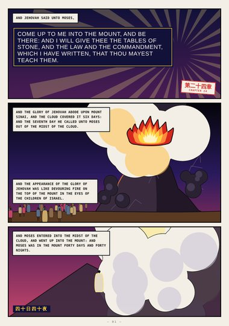
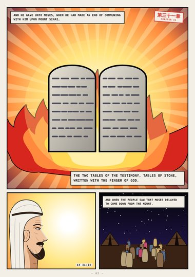
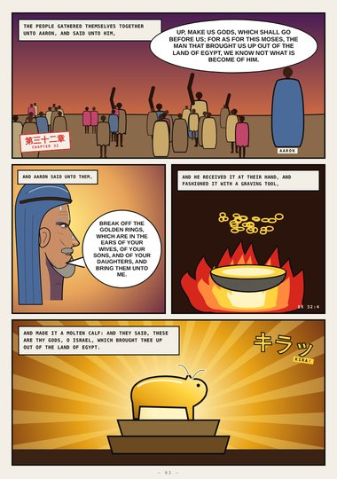
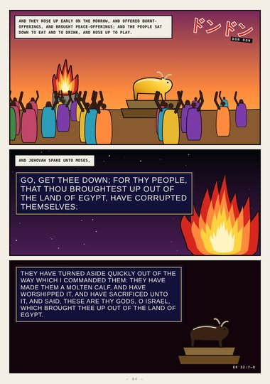
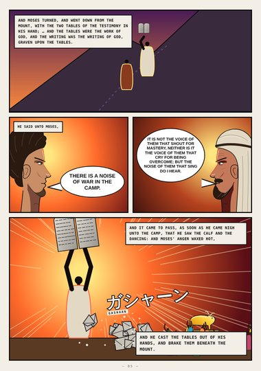
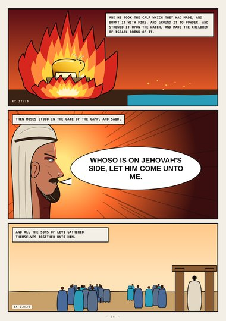
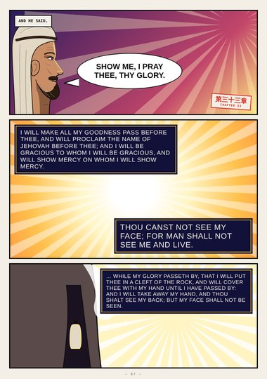
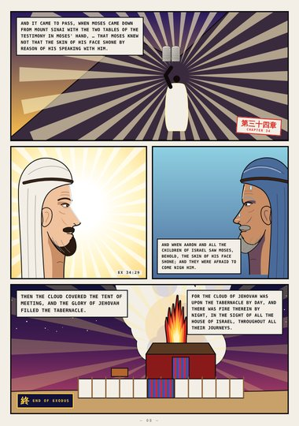

Exodus · Book Five · Exodus 24–40
The Glory
The tables of stone, the golden calf, the tables broken, Moses in the cleft of the rock, his shining face, and the glory filling the tabernacle.
Start reading ›Pages
 CoverCoverExodus 24–40
CoverCoverExodus 24–40
Page 1Come Up to MeExodus 24:12–18
Page 2The Finger of GodExodus 31:18–32:1
Page 3Make Us GodsExodus 32:1–4
Page 4They Rose Up to PlayExodus 32:6–8
Page 5He Brake ThemExodus 32:15–19
Page 6Who Is on Jehovah's Side?Exodus 32:20–26
Page 7Show Me Thy GloryExodus 33:18–23
Page 8The Glory Filled the TabernacleExodus 34:29–40:38